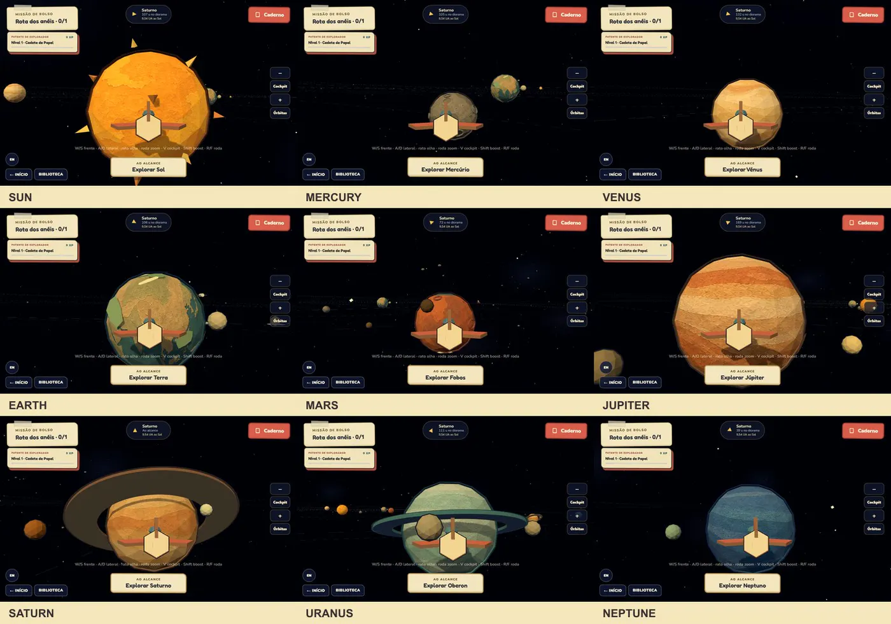
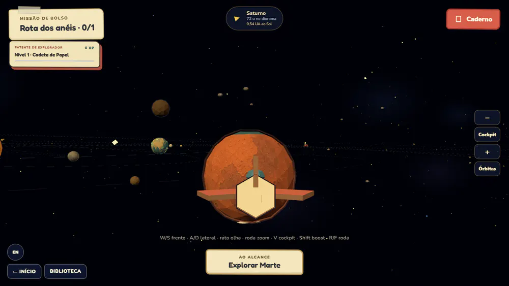
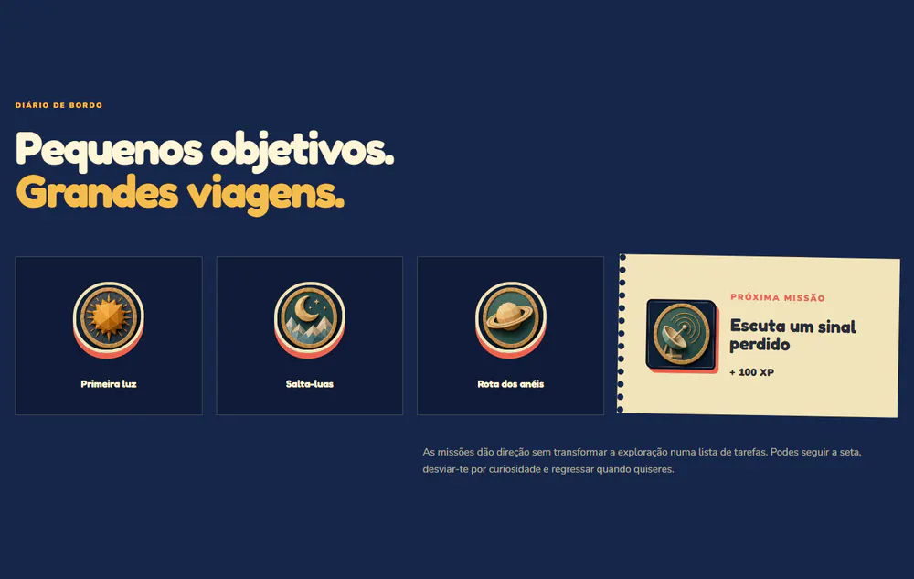
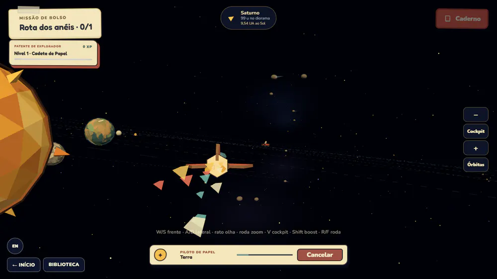
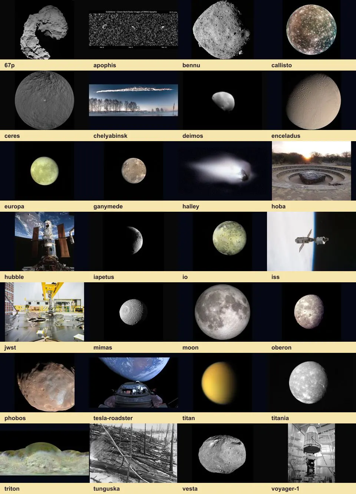
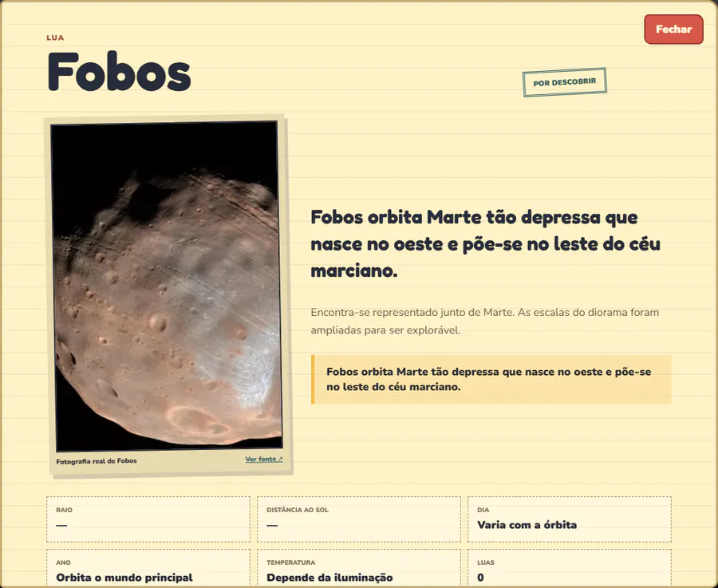

Veredito honesto
De preview promissora a produto coerente.
A maior mudança não é cosmética. O projeto passou a ter uma linguagem própria — diorama low-poly em papel — e um ciclo de produto completo: apresentação → voo → descoberta → ciência real → quiz → XP/prémio → Biblioteca → nova missão.
Conclusão: já existe uma experiência demonstrável e memorável. Ainda não chamaria “produto educativo final” sem enriquecer as medições/quizzes secundários, testar em hardware móvel real e resolver estratégia de dados/backend. Mas a base de jogo, visual e UX deixou de ser um protótipo descartável.
Escopo implementado
O que ficou realmente funcional
| Área | Estado | Evidência |
|---|---|---|
| Homepage editorial | Concluído | Introdução, público, quatro passos, Caderno de Campo, fontes, prémios e CTA para o jogo. |
| Rotas limpas | Concluído | /, /jogo/, /biblioteca/; todas respondem HTTP 200 e não existem links públicos .html. |
| Voo 360° | Concluído | Yaw, pitch, roll, strafe, vertical, boost, zoom e cockpit. Movimento segue a quaternion real da câmara. |
| Piloto por clique | Concluído | Hover com nome, clique curto, arco seguro, rasto de papel, cancelamento manual e chegada no raio de exploração. |
| Sistema Solar | Concluído | Sol, oito planetas, 14 luas, cinco objetos humanos e nove pequenos corpos/eventos. |
| Aprendizagem | Concluído | Caderno em quatro separadores, fotos reais, medidas, dados de hoje/fallback, factos e quizzes. |
| Gamificação | Concluído | XP idempotente, seis níveis, sete prémios únicos, missões, surpresas e feedback visual. |
| Biblioteca | Concluído | 37 fichas, pesquisa, categorias, estado de descoberta, detalhe, fonte, quiz, progresso e prémios. |
| i18n | Concluído | PT/EN partilhado por homepage, jogo e Biblioteca, sem reload e com persistência. |
Direção visual
Papel não é um filtro; é o material do mundo.
Nove identidades materiais
Todos os mundos primários usam texturas próprias com fibras, pigmento e camadas de cartão. As paletas distinguem cada corpo à distância e continuam a receber iluminação facetada.
Silhueta preservada
Saturno e Urano mantêm anéis sólidos; Terra mantém continentes, nuvens e polos elevados; o Sol conserva corona low-poly.
Nuvens em papel
As nuvens elevadas da Terra usam o mapa fibroso creme do runtime em vez de branco liso.
Lua legível
Quando uma lua transita diante do planeta em vista próxima, a composição preserva o raio orbital mas desloca a projeção para o limbo. Deixa de parecer uma peça colada.




Ciência e conteúdo
As fotos passaram a provar o objeto certo.
Foi removido o fallback que fazia 28 objetos secundários herdarem apenas sete imagens — muitas vezes a Terra ou o planeta-pai. O catálogo passou a exigir um asset e uma atribuição própria por lua, veículo e pequeno corpo.


NASA/JPL sustentam a maioria das imagens e efemérides; CelesTrak/SGP4 sustentam ISS e Hubble; Tunguska, Hoba e Roadster usam arquivos licenciados do Wikimedia Commons. O jogo distingue “live”, cache e conteúdo incluído.
Verificação
Resultados observados, não pressupostos
| Gate | Resultado | Notas |
|---|---|---|
| Testes | 181/181 | 44 ficheiros Vitest; física, órbitas, dados, i18n, progressão, Biblioteca, assets, piloto e UI. |
| Lint | 0 erros | ESLint no repositório. |
| Build | Passa | Vite produz as três rotas; bundle principal ~668 kB / 183 kB gzip. |
| Consola | 0 erros | Homepage, jogo e Biblioteca em desktop/mobile nos fluxos auditados. |
| Mobile 390×844 | Sem overflow | As três rotas; piloto ativo não sobrepõe joystick nem ações verticais. |
| Performance | ~58 FPS | Medição headless de 2 s com piloto/texturas ativos. |
| Piloto | 0,9975 | Alinhamento frente visual/velocidade; 1,0 é perfeito. |
| Backdrops | Passa | Caderno, Passaporte e detalhe da Biblioteca fecham fora; conteúdo interno não fecha. |
Feedback brutal
O que ainda não considero “acabado para sempre”
Conteúdo secundário ainda é desigual
As fotos estão corretas, mas muitas luas/sondas usam medidas genéricas (“varia com a órbita”) e um quiz de identidade gerado. Para valor escolar forte, precisam de dados e perguntas próprios.
Dados dinâmicos não são backend
Cache/fallback tornam o jogo resiliente, mas APIs públicas podem mudar, limitar chamadas ou ficar indisponíveis. Um serviço próprio seria necessário para produção sustentada.
Bundle principal é pesado
~668 kB de JavaScript antes de gzip é aceitável para a demo, não ideal para telemóveis escolares modestos. Three.js e catálogos devem ser carregados progressivamente.
QA real ainda falta
Headless e viewport mobile não substituem Safari iOS, Android económico, touch real, leitor de ecrã e testes com crianças/professores.
Piloto não é pathfinding universal
A rota usa arco exterior e respeita o Sol, mas não calcula uma trajetória ótima entre múltiplos corpos móveis. Em rotas extremas pode precisar de waypoints adicionais.
Progresso é local
O passaporte vive no dispositivo. Não existe conta, sincronização familiar/escolar, perfis múltiplos ou recuperação depois de limpar storage.
Action list
Próximo self-improvement loop
- P0 · Conteúdo científico por objeto. Substituir medições genéricas e quiz de identidade por fichas curadas para as 28 entradas secundárias; rever fontes com professor/astrónomo.
- P0 · Testes em dispositivos reais. Safari iOS, Chrome Android económico, touch/pinch, WebGL context loss, consumo de memória e orientação.
- P1 · Performance. Lazy-load de Biblioteca/catálogos, compressão e carregamento progressivo das texturas, análise do chunk Three.js e LOD para cinturões/objetos pequenos.
- P1 · Piloto avançado. Waypoints seguros para múltiplos volumes, duração máxima previsível, voz/feedback de chegada e opção de velocidade reduzida.
- P1 · Acessibilidade. Auditoria com teclado integral, leitor de ecrã, alternativas ao canvas, contraste em estados bloqueados e preferência de movimento reduzido no rasto.
- P2 · Perfis e escola. Perfis familiares, exportação do passaporte, modo professor, objetivos curriculares e sincronização opcional.
- P2 · Expansão editorial. Guias Lumi, coleções temáticas, eventos sazonais, mais missões e narrativas que usem os dados dinâmicos sem fingir precisão instantânea.
O handoff operacional para novas sessões está em SELF-IMPROVEMENT.md; o diário cronológico está em progress.md.